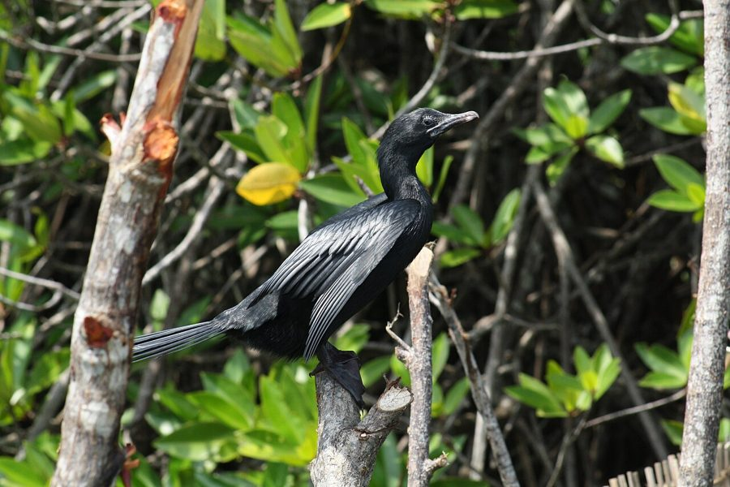

पनकौवाLittle Cormorant
Microcarbo niger · Phalacrocoracidae · BRD-0074

- Scientific name
- Microcarbo niger (Vieillot, 1817)
- Family
- Phalacrocoracidae
- Hindi
- पनकौवा
- Local names
- pankauwa, pan kauwa, pani kauwa, jal kauwa, pankawwa
- Status here
- native
- Movement
- Resident, here all year
- IUCN
- LC
- Review
- audited and independently read
When to look कब देखें
Present all year.
पनकौवा / Little Cormorant
Microcarbo niger (Vieillot, 1817) — Phalacrocoracidae
पनकौवा — पानी में पूरी तरह डूबने वाली एक छोटी काली चिड़िया जो धान के खेतों और तालाबों में मछली का शिकार करती है। इसकी लंबी गर्दन और नुकीली चोंच पानी में तेजी से मछली पकड़ने के लिए बिल्कुल सही बनाई गई हैं। यह तैराकी में इतना निपुण है कि गहरे पानी में डूबकर छोटी मछलियों का पीछा करता है।
Quick Identification त्वरित पहचान
| Feature | Description |
|---|---|
| Size | Small cormorant; 50–55 cm long; much smaller than Great Cormorant |
| Plumage | Entirely black; glossy green-black in breeding season with white head patch |
| Head | Long neck with yellow gape line; sharp-pointed bill |
| Feet | Webbed, placed far back on body — typical of diving birds |
| Behaviour | Dives repeatedly; often surfaces far from where it submerged |
| Posture | Swims very low in water; often perches with wings held open to dry |
Field tip: A small black bird in water that suddenly disappears underwater and resurfaces far away — is a Little Cormorant. The white patch on the head in breeding season is distinctive. Look for the characteristic upright perching posture with wings half-open to dry.
हिंदी — कैसे पहचानें:
छोटी, सर्वथा काली चिड़िया जो पानी में गोता लगाती है।
प्रजनन काल में सिर पर सफेद पंखों का पैच दिखता है।
नुकीली, लंबी गर्दन और पीली चोंच।
पेड़ों पर बैठकर पंख खुला रखती है — पानी सूखाने के लिए।
Morphology आकारिकी
Biometrics:
| Measurement | Range |
|---|---|
| Total length | 500–550 mm |
| Wing (flattened chord) | 195–225 mm |
| Tail | 120–140 mm |
| Bill | 45–55 mm |
| Weight | 350–450 g |
Size: 50–55 cm tall; wingspan 75–90 cm. Weight 350–500 g. Much smaller than Great Cormorant.
Plumage: Entirely black, with a glossy green sheen in bright light. In breeding season (May–June), develops white patches on the head and upper neck. Bill develops a yellowish patch at the gape.
Bill: Long, sharply pointed, yellow at gape, black at tip — perfectly adapted for underwater prey capture.
Neck: Long and flexible, allowing rapid head movements underwater during strikes.
Feet: Black, fully webbed; placed far back on the body, making walking on land awkward but diving underwater extremely efficient.
Eyes: Small, dark; positioned to look downward in water.
Sexes: Identical in plumage. Juveniles duller, greener.
Vocalisations. Three main call types:
- Contact and alarm call: A harsh guttural gark-gark or clicking sound given when disturbed at rest or in flight; frequency 0.5–2.0 kHz.
- Courtship call: Soft grunting and hissing at the nest during breeding season; pairs produce alternating calls during nest-building.
- Territorial call: Loud croaking and growling sounds from perches and water, establishing feeding territories.
हिंदी: काली चिड़िया जो पानी में पूरी तरह डूब सकती है। गर्दन लंबी और लचकदार। चोंच नुकीली और पीली।
Ecological Role पारिस्थितिक भूमिका
Aquatic predator: The Little Cormorant is an efficient underwater hunter. It feeds almost exclusively on fish, taking:
- Small fish species (Puntius, Aplocheilus, Trichogaster, juvenile snakeheads)
- Tadpoles and aquatic larvae
- Small freshwater shrimps and aquatic insects
Fishing technique: Dives from the surface and pursues prey underwater using its fully webbed feet. A single dive lasts 10–30 seconds and covers 5–15 meters underwater.
Population indicator: The presence of Little Cormorants in a water body indicates an abundance of small fish. Their absence may signal fish kills, pesticide pollution, or ecological collapse.
Prey of: Fish eagles, marsh harriers, and snakes may take chicks at the nest.
हिंदी: यह पानी में पूरी तरह डूबकर मछली पकड़ता है। एक बार डूबने पर 10-30 सेकंड तक पानी के अंदर रहता है। छोटी मछलियाँ और बच्चे मेंढक खाता है।
Life Cycle / Phenology जीवन चक्र
Resident: Present year-round in eastern UP; no migration.
Breeding: May–September (monsoon). Colonial nester in heronries (often shared with egrets, herons, ibises).
Nesting: Platform of sticks in tall trees, especially near water. Trees: tamarind, peepal, banyan, neem. Colony sites re-used year after year.
Eggs: 3–4 pale blue-green eggs. Both parents incubate ~22 days.
Chicks: Altricial; fed regurgitated fish by both parents. Fledge at ~6 weeks.
Roosting: Communal night roosts with other water birds; often on exposed rocks or dead trees.
Moulting: Begins July, completes by October; replaces all flight feathers seasonally.
हिंदी: यह पूरे साल रहता है। मानसून में प्रजनन करता है। कई पनकौवे एक ही पेड़ पर घोंसले बनाते हैं।
Prey भोजन
| Prey | Hindi | Capture Method |
|---|---|---|
| Small fish (Puntius, Aplocheilus) | छोटी मछली | Underwater pursuit |
| Tadpoles | डेंडुक के बच्चे | Surface dives |
| Aquatic insects (nymphs) | जल कीड़े | Pursuit diving |
| Small shrimp | छोटे झींगे | Active hunting |
हिंदी: छोटी मछलियाँ, बच्चे मेंढक, और जल कीड़े खाता है। सब कुछ पानी में डूबकर पकड़ता है।
Conservation Status संरक्षण स्थिति
IUCN Status: Least Concern (LC)
Wildlife Protection Act, 1972: Listed under Schedule IV (Protected) of the Wildlife (Protection) Act, 1972, as amended in 2022. Killing or harming a Little Cormorant is illegal in India.
Threats: Loss of wetland habitat to drainage and conversion; pesticide pollution in fisheries; entanglement in fishing nets; disturbance at roosting sites.
हिंदी: यह पक्षी भारतीय कानून में संरक्षित है। इसे मारना या नुकसान पहुँचाना गैरकानूनी है।
Agricultural / Human Relevance कृषि और मानव संबंध
Fish predation: Little Cormorants feed on fish in paddies and fish ponds; some fishermen view them as competitors. However, they take mostly small, non-commercial species.
Pond health indicator: Their presence indicates a healthy aquatic ecosystem with abundant fish. Fishermen in traditional villages often protect nesting colonies as a sign of a productive pond.
Neutral cultural status: Unlike storks and cranes, the Little Cormorant has no special cultural meaning in local tradition. It is hunted for sport in some areas despite legal protection.
हिंदी: यह छोटी मछलियाँ खाता है। कभी-कभी मछली पकड़ने वालों को यह पसंद नहीं आता, लेकिन असल में यह तालाब के स्वास्थ्य का संकेतक है।
Expected Locally स्थानीय रूप से अपेक्षित
Not a field record. Written from published accounts for eastern Uttar Pradesh. No confirmed local sighting yet — if you have seen it, that is what the atlas needs.
अभी तक स्थानीय पुष्टि नहीं। यह विवरण प्रकाशित स्रोतों से है।
Common and abundant year-round in all water bodies across Basti district — tanks, ponds, river stretches, and backwater channels. Colonial roosting sites with dozens of individuals are reported near major lakes. Particularly visible during the breeding season (May–September) when birds gather in active heronries.
Distribution वितरण
Global range: Widespread across the Oriental region, from Iran through the Indian subcontinent to Indonesia and the Philippines.
In India: Found throughout India in suitable wetland habitats, from sea level to about 1,000 m elevation.
In Uttar Pradesh: Common resident throughout all districts of UP, heavily concentrated in the Gangetic plains and associated wetland systems.
In Basti district / eastern UP: Abundant year-round resident, particularly associated with the Ghaghra and Rapti river systems, lakes, and village ponds.
Research Questions शोध प्रश्न
Anyone can investigate these | कोई भी इन प्रश्नों की जाँच कर सकता है
- How many Little Cormorants use a particular pond in winter? / एक तालाब में सर्दियों में कितने पनकौवे रहते हैं? — Count birds at dusk at a winter roost over 10 visits.
- How long does a dive last, and how deep does it go? / गोता कितनी देर तक रहता है? — Time dives and observe where birds surface.
- What is the size range of fish they catch? / ये कितनी बड़ी-छोटी मछलियाँ पकड़ते हैं? — Observe feeding birds and estimate prey size.
- Where are the active heronries in your village? / आपके गाँव में घोंसले कहाँ हैं? — Map all trees with active nests in May–August.
- Do cormorants in heavily fished ponds have different behaviour than those in unfished ponds? / क्या मछली पकड़ने वाले तालाबों में अलग व्यवहार दिखता है? — Compare two pond types.
Similar Species मिलती-जुलती प्रजातियाँ
| Species | How to tell apart | हिंदी |
|---|---|---|
| Great Cormorant (Phalacrocorax carbo) | Much larger (75–100 cm); white cheek patch year-round; vagrant only | बहुत बड़ा |
| Black-crowned Night Heron | Nocturnal; shorter neck; different bill shape; grey-and-black plumage | रात बगुला |
| Indian Pond Heron | Much smaller; brown plumage at rest; white wings in flight | छोटा भूरा बगुला |
Field rule: A small, all-black diving bird in freshwater that surfaces far from where it dived and perches with wings spread open — is a Little Cormorant. The glossy black colour and diving habit are definitive.
Taxonomy & Classification वर्गीकरण
Original description. Microcarbo niger was described by Louis Jean Pierre Vieillot in 1817 in his Analyse d'une nouvelle ornithologie élémentaire (page 58) as Hydrocorax niger. Type locality: India. The genus Microcarbo was resurrected by Siegel-Causey (1988) to separate the small Old World cormorants from the larger Phalacrocorax.
Subspecies. Three subspecies are recognised:
| Subspecies | Authority | Range | Notes |
|---|---|---|---|
| M. n. niger | (Vieillot, 1817) | Indian subcontinent, Sri Lanka | Eastern UP subspecies — smallest form |
| M. n. immaculatus | (Neumann, 1940) | Southeast Asia (Myanmar, Thailand, Cambodia) | Slightly larger; plumage tinged green |
| M. n. bengalensis | (Stephens, 1826) | Bangladesh, Nepal | Intermediate size; variant of nominate |
Family and order placement. Order Suliformes (recently revised from Pelecaniformes), family Phalacrocoracidae (cormorants and shags), containing 40 species worldwide. The genus Microcarbo contains 4 species of small cormorants.
Phylogenetic notes. Molecular studies show Microcarbo niger is most closely related to the Australian Little Black Cormorant (Microcarbo melanoleucos). The genus is monophyletic.
IUCN status rationale. Assessed as Least Concern (LC). The species has an extremely large range, very large population, and appears stable across most of its range. Wetland habitat loss is slow in India outside intensively agricultural zones.
Photo Gallery फोटो गैलरी
फोटो निर्देश: तालाब और नहरों के किनारे सुबह और शाम को आसानी से दिखते हैं। डूबते हुए और पानी से निकलते हुए फोटो लें। प्रजनन काल (मई-जून) में सफेद सिर की फोटो ज़रूरी है।
Photos needed आवश्यक फोटो
- [ ] Diving sequence — showing submersion (गोता लगाते हुए)
- [ ] Emerging from water with fish (मछली लेकर निकलते हुए)
- [ ] Breeding plumage — white head patch (प्रजनन रंग)
- [ ] Perched with wings open drying (पंख खोलकर सूखाते हुए)
- [ ] Heronry — multiple birds nesting together (घोंसलों का समूह)
No photos yet — add field photos to media/species/little_cormorant/ and run node scripts/sync_photos.js.
Atlas Connections संबंधित प्रजातियाँ
- Indian Lotus — roosting and nesting habitat; fish shelter among lotus stems
- Indian Pond Heron — fellow aquatic predator; shares water bodies and roosting sites
- Common Coot — often found in same water bodies; dietary overlap on aquatic invertebrates
References संदर्भ
- Vieillot, L.J.P. (1817). Analyse d'une nouvelle ornithologie élémentaire. Deterville, Paris. [original description]
- Siegel-Causey, D. (1988). Phylogeny of the Phalacrocoracidae. Condor, 90(4), 885–905.
- Ali, S. & Ripley, S.D. (1987). Handbook of the Birds of India and Pakistan. Vol. 1. Oxford University Press, New Delhi.
- Grimmett, R., Inskipp, C. & Inskipp, T. (2011). Birds of the Indian Subcontinent. 2nd ed. Christopher Helm, London.
- BirdLife International (2023). Microcarbo niger. IUCN Red List of Threatened Species.
- GBIF Occurrence Data — Microcarbo niger, India (2024).
- Rasmussen, P.C. & Anderton, J.C. (2005). Birds of South Asia: The Ripley Guide. Smithsonian Institution, Washington.
Source file: species/fauna/birds/little_cormorant.md